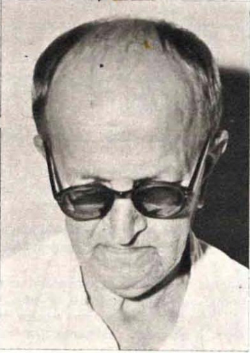

P. Carlo Muratori nacque a Creda (Bologna) il l0 febbraio 1902.
Alunno del Seminario diocesano per il ginnasio, e del Seminario Regionale di Bologna per il liceo, entrava nel noviziato di Venegono nel 1921, facendovi la professione il 1 novembre 1923.
Frequentò i corsi di teologia nel Seminario di Verona; emise i voti perpetui l'11 febbraio 1926; e fu ordinato sacerdote a Verona 1'11 luglio 1926. Partì per il Bahr-el-Gebel in novembre dello stesso anno.
Fu successivamente, per vari anni, nelle stazioni di Regiàf, Torit, Isoke e Lerwa, avendo così occasione di studiare a fondo le lingue Bari, Lotuho, Acioli e affini, e portando un notevole contributo alla conoscenza di queste lingue e gruppi etnici. P. Muratori, infatti, pur dedicandosi con zelo al ministero, fu uno studioso appassionato e meticoloso di lingue, costumi e problemi africani, di fama internazionale.
Rimpatriato una prima volta nel 1936, ritornava nel Bahr-el-Gebel nei 1939, passando nel 1948 al Vicariato di Khartoum. Venne di nuovo in Italia nel 1950, ma ritornò a Khartoum nel 1952, occupandosi, oltre che dei suoi studi e di insegnamento, anche dei neri del Sudan meridionale emigrati nel nord, e dei Nubani, esercitando tra di loro un vero apostolato, interessandosi ai loro vari problemi e sollecitando costantemente aiuti dai suoi numerosi amici e benefattori in varie parti del mondo.
Rimpatriato in febbraio 1959, minato da un male incurabile (cancro del sangue), fu per alcuni mesi in cura all'ospedale di Negrar, sperando fino all'ultimo di potersi rimettere e ritornare nella sua missione; ma alla fine s'accorse che le forze gli venivano meno e si preparò con serenità ed edificante pietà alla morte, che lo colse, rassegnato e in piena lucidità di mente, la sera del 29 luglio 1959.
Tra le sue opere: Grammatica Lotuxo, Verona 1938. English-Bari-Lotuxo-Acoli Vocabulary, Okaru (Sudan) 1948.
